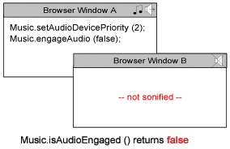
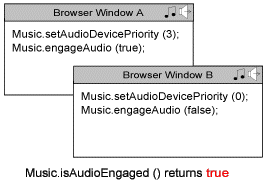
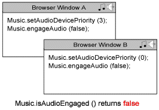
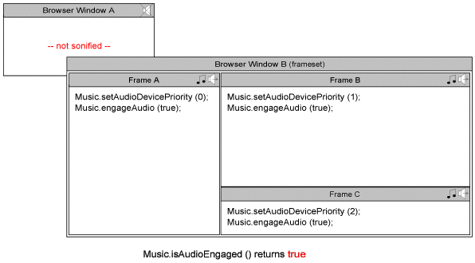

|
| Contents | |
| Background |
On some Windows systems, limitations in the installed sound hardware, the software drivers for the sound hardware, or the operating system's audio architecture may result in a situation where the Beatnik Player cannot play audio at the same time as other media players that wish to play audio. Typically, with these systems only one application can use the system's audio services at a time. This limitation may often result in a situation where two (or more) applications are contending for this single audio device that cannot be shared by multiple applications simultaneously. This problematic situation is referred to as an "audio device contention".
On systems that are not able to share the audio device from multiple applications simultaneously, content sonified using the Beatnik Player could be affected primarily in two ways...
If some other media player (such as Microsoft's Windows Media Player, Real Networks' RealPlayer, nullsoft's Winamp, Liquid Audio's Liquid Player, etc.) is using the system's audio device at the time that a Web page loads that is using the Beatnik Player, the Beatnik Player will not be able to play audio and the Beatnik-sonified content will not be heard.
Starting from version 2.1, the Beatnik Player offers a way for sonified content to determine whether or not the player's underlying audio engine is engaged. If the audio engine is disengaged (possibly as a result of another media player holding on to the system's audio device), this information can be reflected in the content's user interface or the user can be alerted. This helps content developers to avoid situations where the user has the expectation of hearing audio from Beatnik-sonified content when, in actual fact, the Beatnik Player is not able to play audio because some other media player is using the system's audio device.
If the user has a Web page open that is playing audio through the Beatnik Player and they then launch another media player (such as Microsoft's Windows Media Player, Real Networks' RealPlayer, nullsoft's Winamp, Liquid Audio's Liquid Player, etc.), or they open another Web page that uses another media player, or they click on a link to a media file that will be played through another media player, then that other media player will not be able to play audio and may report an error message to the user.
Some users may blame this problem on the Beatnik Player, some may blame the other media player that failed to play audio, some may blame the Web content that has links to media that appears unable to play correctly, and some may blame the system for being incapable of mixing audio from multiple applications. However the user interprets the situation, they are likely to blame someone for this kind of failure condition. This ultimately translates to a technical support burden for someone.
Beatnik has found itself in the troubled situation of being unfairly blamed for the inability of some systems to mix audio from multiple applications. One of the cool ways of sonifying a Web site using the Beatnik Player is to create a persistent "soundtrack" for the site. This is typically done through the technique of frameset-based sonification. However, some developers using this technique found that introducing persistent Beatnik-sonification into their sites also introduced more technical support incidences.
Sites that have links to media files that would be played through different media players may have had these kinds of problems before, but the user's expectations may have been slightly different. A user may not find it unreasonable to have to close one media player application in order to allow another media player application to play audio - especially if they've experienced this kind of limitation in their system before. However, this same user may have little patience with a Web site where none of the links to media files can play audio correctly because the persistent sonification throughout the Web site is causing the Beatnik Player to hold on to the system's audio device.
The audio device contention issue is not a widespread problem. A small percentage of Windows systems are affected - mostly systems with older versions of the Windows operating system (such as Windows 95 and earlier versions of Windows NT) and older audio hardware. By far the majority of new Windows systems have the appropriate combination of audio hardware, software drivers, and operating system in order to allow multiple applications to mix audio simultaneously. There may be a very small number of new systems that still have this limitation, but the chances are quite low.
Even though the number of users experiencing this problem may be low, it is - nevertheless - not an insignificant problem. And if it results in a developer choosing not to use the Beatnik technology in their Web content because they have no way of managing this problem, this could potentially be very damaging to the adoption of the Beatnik technology in general.
With the Beatnik Player version 2.1, a system was put in place to manage this problem and help to avoid situations where the use of the Beatnik Player in sonifying a Web site could interfere with some users' ability to experience audio or audiovisual content through other media players - situations which could otherwise lead to technical support queries for the manager or developer of the Web site and which could potentially damage the reputation of the site.
This system is aptly named the "Audio Device Contention Manager" and is referred to throughout the remainder of this document simply as the ADCM.
| The System Explained |
The primary goal behind the design of the ADCM system is to provide as easy a way as possible for content authors to avoid exposing users to the audio device contention issue, with minimal modification of content needed in most cases in order to gain the benefits of the system.
Secondary goals include...
Because it is beyond Beatnik's power to rewrite inadequate older operating systems or magically manifest new audio hardware for those systems that are mixing-challenged, the ADCM focuses on measures designed to alleviate the problem and to drastically reduce the incidence of situations where the user is trying to use a media player but cannot hear audio as expected.
Feedback received from developers of high traffic Web sites indicates that while broad sonification of a Web site is an enhancement that these developers are willing to invest their effort in, such sonification is not compelling enough to take priority over the many other media offerings that these Web sites make available that are targeted for playback through other media players (such as RealNetworks' RealPlayer, Microsoft's Media Player, Apple's QuickTime Player, etc.).
When faced with a choice between having broad Web site sonification, that may cause audio device contention problems for a small yet not insignificant percentage of their users, and having no Web site sonification with the guarantee that no additional tech support problems will be introduced as a result of using the Beatnik technology, such Web developers would choose to forgo the Beatnik sonification. The risk of incurring tech support problems is just too great of a concern.
These same developers, however, have no problem with having other dedicated Beatnik audio applications, such as eMixes, launched from certain pages of their Web site. Because an eMix is a dedicated audio application that has a "face" and is associated, in the user's mind, with a specific "player" window, the user's expectations are different. For example, a user who has a system with the potential for audio device contention situations may have already experienced the inability to hear Real Audio content while playing streaming audio in another window through the QuickTime player. A dedicated Beatnik audio application is much the same, in this regard, and such a user will probably understand that an eMix needs to be closed first before opening a link to Real Audio content, and vice versa.
Developers who have sonified high traffic Web sites do see the value to adding a tasteful "soundtrack" to a Web site, and they would like to be able to offer this added richness in their content. They just don't want to incur the wrath of a small percentage of their users in doing so. In fact, being able to easily disable sonification for just those users who's systems are not capable of mixing audio from multiple applications is quite an attractive solution to these developers, since the majority of users who do not have such problems with their systems can still get the full experience intended by the developer.
The ADCM system, that is incorporated into Beatnik Player versions 2.1 and higher, combines the concept of audio device priority with an improved behavior for the Music.engageAudio static method to make it possible to use Beatnik in sonifying a high traffic Web site, and have the sonification automatically yield on those systems that cannot mix audio from multiple applications.
The concept of "audio device priority" was introduced as a means for sonified content to indicate how "hungry" it is to use the system's audio device when the system is incapable of sharing the audio device with other applications simultaneously (ie. mixing audio from multiple applications). In simple terms, the lowest audio device priority level indicates that the content thoroughly desires to not be using the audio device on problematic systems, whereas the highest audio device priority level indicates that the content is completely unwilling to let go of the audio device on such systems.
A sonified document may be set to one of four possible audio device priority levels...
This audio device priority level is used to indicate content that is sonified using the Beatnik Player, and that may also contain inline media using a non-Beatnik media player that may want to also use the audio device. This class of content would like the Beatnik sonification to yield on those systems that are incapable of mixing audio from multiple applications, so that the Beatnik sonification takes a lower priority to the other inline media. Because of the behavior of audio device priority level 1, it is not necessary to use audio device priority level 0 for content that merely has links that may launch other media players in different windows.
When a sonified document is set to audio device priority level 0, the system's audio device will be released by the audio engine only if all of the following conditions are met...
This audio device priority level is used to indicate the most typical kind of content that is sonified using the Beatnik Player. This class of content would only like to use the audio device on systems that are incapable of mixing audio from multiple applications, on the condition that the window containing the sonified content is focused and that the content has not requested that the audio engine be disengaged (using the Music.engageAudio static method). This is the default level for any sonified content that does not explicitly set the audio device priority level using the Music.setAudioDevicePriority static method. By only desiring to use the audio device when the content's parent window is focused, this audio device priority level affords the user the greatest protection against audio device contention issues.
Switching to another unrelated browser window that may contain media using other media players will cause the window containing the sonified content to lose focus and the sonified content will, therefore, no longer desire to use the audio device. Similarly, launching an application by clicking on the Windows system's "Start" menu will also cause the window containing the sonified content to lose focus. Audio device priority level 1 is also appropriate for sonified content that has links that may launch other media players in different windows, since the act of launching this other media in other windows will cause the window containing the sonified content to lose focus and the sonified content will, therefore, no longer desire to use the audio device.
When a sonified document is set to audio device priority level 1, there is a fairly tricky set of logic that determines ultimately whether or not the audio engine will be engaged (ie. using the system's audio device). For a better understanding of this logic, consult the section Rules Used to Determine Audio Engaged State.
Audio device priority level 1 may not be appropriate for certain styles of sonified content, such as music remixing applications or jukebox applications, where the user may desire that the content continue playing audio while in the background, and while the user continues to browse other Web sites (or use another application) in a foreground window. For such content, audio device priority level 2 is more appropriate.
This audio device priority level is used to indicate the kind of content that is sonified using the Beatnik Player, where the user may desire that the content continue playing audio while in the background, and while the user continues to browse other Web sites (or use another application) in a foreground window. This class of content includes dedicated music applications that may pop open in separate "player-like" windows, such as music remixing applications or jukebox applications.
This class of content would like to use the audio device on systems that are incapable of mixing audio from multiple applications, even when the window containing the sonified content is not focused, but provided that the content has not requested that the audio engine be disengaged (using the Music.engageAudio static method). Audio device priority level 2 does not afford the user the same level of protection against audio device contention issues as audio device priority level 1, but does allow content developers to still offer dedicated music applications that can play audio in the background and are not significantly crippled on problematic systems.
When a sonified document is set to audio device priority level 2, there is a fairly tricky set of logic that determines ultimately whether or not the audio engine will be engaged (ie. using the system's audio device). For a better understanding of this logic, consult the section Rules Used to Determine Audio Engaged State.
This audio device priority level is used to indicate the kind of content that is sonified using the Beatnik Player, where the user or the content provider may desire that the content continue playing audio while in the background, regardless of whether or not there is another window that is focused and that contains sonified content that is set to audio device priority level 0.
There are few - if any - types of content that would fall into this class, but this class may include what are considered to be ultra-important music applications. Because this audio device priority level essentially undermines audio device priority level 0, it is not recommended to use this level unless there is an exceptionally compelling reason.
When a sonified document is set to audio device priority level 3 and the system is incapable of mixing audio from multiple applications, the system's audio device will be in use by the audio engine provided that the content has not requested that the audio engine be disengaged (using the Music.engageAudio static method), and provided also that another media player application is not holding on to the audio device.
Because of the sensible default of audio device priority level 1, no action will be required for most sonified content in order to gain the benefits of the ADCM system. There are really just a few types of content where explicitly setting an audio device priority level is desirable. And, even in such cases where audio device priority level needs to be set explicitly, the ADCM makes it a snap.
The ADCM has been designed in such a way that the burden is not placed on you, as a content developer, to determine if the user's system has the potential for audio device contention. In fact, all that you need to do is to choose an audio device priority level appropriate for your sonified content, to achieve the desired ADCM behavior for that content on problematic systems. For systems that are fully capable of mixing audio from multiple applications, the audio device priority setting simply has no effect. So, nothing needs to be specially conditionalized for these different systems.
The following rather straightforward sample code example illustrates the code that would need to be added in a typical application of the ADCM...
<HTML><HEAD><TITLE>High Traffic Site - Navbar</TITLE></HEAD>
<BODY>
<SCRIPT SRC="music-object.js"></SCRIPT>
<SCRIPT LANGUAGE=JavaScript><!-- //
Music.setAudioDevicePriority (0);
uiPlayer = new Music ();
jinglePlayer = new Music ();
backgroundPlayer = new Music ();
uiPlayer.stubEmbed ('music/stub.rmf');
jinglePlayer.preloadEmbed ('music/corporate-jingle.rmf');
backgroundPlayer.magicEmbed (
'SRC="music/bg-theme.rmf" ' +
'HIDDEN WIDTH=0 HEIGHT=0 ' +
'AUTOSTART=TRUE LOOP=TRUE'
);
// --></SCRIPT>
<!--......................rest of document follows......................-->
|
In the above sample code listing, the highlighted code indicates the code that has been added in order to customize the ADCM's behavior. Notice how it is only one line of code.
In this example, the sonified document represents a navigation bar that will be loaded into one frame of the Web site's frameset and will persist throughout the site. Because the site may contain documents that use other media players (such as Macromedia's Flash Player, Apple's QuickTime Player, etc.), we need to ensure that the Beatnik Player is not using the system's audio device when the window containing this site is focused (ie. the user is browsing it) and the user's system is not capable of mixing audio from multiple applications. In order to ensure this, all that is needed is to set the audio device priority level for the sonified document to 0. This is done quite simply by calling the Music.setAudioDevicePriority static method immediately after sourcing in the "music-object.js" file.
While this example addresses only one type of situation, most other situations can be addressed just as easily by selecting appropriate audio device priority levels for sonified documents. More sophisticated management of the audio device contention issue can be achieved, if desired, using the various other API features of the ADCM (see the section API Features for Customizing the Behavior of the ADCM).
The audio engaged state for the audio engine is typically re-assessed each time one of the following events occurs...
Each time that the engaged state for the audio engine is re-assessed (see the section When the Engine's Audio Engaged State is Re-assessed), the following rules are used to determine the audio engine's new engaged state...
Upon first inspection, this may seem like some fairly tricky logic, but it is this set of rules that achieves the desired and intuitive behaviors for the various audio device priority levels 0, 1, 2, and 3, as well as the improved behavior for the Music.engageAudio static method (see the section New Behavior for the Music.engageAudio Method).
Each time there is a change in the engaged state of the audio engine, the onAudioEngagedChange static callback will be triggered. At this time, any handlers that have been registered for this callback (using the dedicated Music.onAudioEngagedChange static method or the more general Music.addCallbackHandler static method) will be executed.
By registering handlers for the onAudioEngagedChange static callback, the engaged state of the audio engine can be reflected in a sonified document's user interface or the user can be alerted. This can help to avoid situations where the user has the expectation of hearing audio from Beatnik-sonified content when, in actual fact, the Beatnik Player is not able to play audio at that moment because some condition has caused the audio engine to become disengaged.
While the onAudioEngagedChange callback is used to monitor changes that occur in the player's global audio engine that is shared by all sonified documents, multiple sonified documents can independently register handlers for this callback. All handlers registered for this callback by all sonified documents will be executed each time there is a change in the audio engine's engaged state, so all sonified documents have the option of indicating this state in some manner in their user interface, or otherwise acting on updates of the audio engine's engaged state.
Several new static methods were introduced in Music Object 3.3 to allow the behavior of the ADCM system to be customized to suit the needs of specific sonified content. These new static methods are as follows...
With player versions earlier than 2.1, it is still possible to alleviate the audio device contention problem in a limited manner by using the Auto Disengage extension. And, without any extra work, this extension can also provide improved behavior under the ADCM system that is incorporated into Beatnik Player versions 2.1 and higher.
| Examples |


| Backwards Compatibility Issues |
The API for the ADCM has been designed deliberately in such a way as to fail gracefully when the player installed in the user's browser is earlier than version 2.1.
In most cases, content authors who have concerns about the audio device contention issue will merely update their content to include a call to the Music.setAudioDevicePriority static method before any player instances have been embedded. This method, as it is implemented in the Music Object API, is designed to fail gracefully with Beatnik Player versions earlier than 2.1.
While the value returned by the Music.getAudioDevicePriority static method will correctly return the last value that was set using the Music.setAudioDevicePriority static method, Beatnik Player versions earlier than 2.1 will simply not exhibit any of the behaviors of the ADCM system because these versions of the player do not incorporate this system.
In some more sophisticated cases, content authors may make use of the other API features of the ADCM, such as the Music.isAudioEngaged, Music.isAudioDeviceShared, and Music.onAudioEngagedChange static methods. These methods have all been designed so as to fail gracefully when the installed version of the Beatnik Player is earlier than 2.1.
| New Behavior for the Music.engageAudio Method |
The Music Object API's Music.engageAudio static method and the obsoleted engageAudio instance method have been used historically to try to manage the audio device contention issue. However, because of security restrictions that are placed upon the JavaScript language, different sonified windows are not able to cooperate with one another in setting the engaged state of the player's underlying audio engine. Consequently, with the behavior of the Music.engageAudio method in Beatnik Player versions earlier than 2.1, different sonified windows could potentially "step all over" one another in trying to engage or disengage the audio engine.
The new behavior for the Music.engageAudio static method, introduced at Beatnik Player version 2.1, prevents this kind of tug of war situation. With the new behavior, a sonified document uses the Music.engageAudio method to register whether or not it wishes the audio engine to be engaged, based upon its understanding of whether or not there is any audio activity in the document. Using the Music.engageAudio method no longer has the effect of explicitly setting the engaged state of the audio engine. Instead, the audio device priority settings for all sonified documents, along with all calls that have been made to the Music.engageAudio method by the sonified documents, and the focused states of the various windows containing the sonified documents are used to cooperatively determine the audio engine's engaged state.
For a better understanding of the rules that are used to determine the audio engine's engaged state, consult the section The System Explained: Rules Used to Determine Audio Engaged State.
| Emulating Audio Device Contention |
While there are a good number of Windows systems that may be prone to the audio device contention issue, there is no guarantee that a Windows system that you are doing development or testing on will actually exhibit this problem. If your Windows system does not exhibit the problem, then the Beatnik Player will not, by default, engage the ADCM in order to mitigate the problem. Any customizations that you make to the ADCM's behaviors will not affect the behavior of your content on such a system, and so you will not be able to gauge how these settings would affect the user experience for a user who's system does exhibit the audio device contention issue. So, you would essentially be working in the dark.
In order to help you in customizing your sonified content to best make use of the ADCM, Beatnik Player versions 2.2 and higher (Windows only) allow you to coerce the player into thinking that the system either does or does not exhibit the audio device contention issue (regardless of whether it truly does or not). This effectively overrides the player's auto-detection for audio device contention.
Coercing the different behaviors is achieved quite easily through the use of the convenient registry scripts that are provided along with this documentation. These scripts are listed and described in the table below...
|
In order to run one of these registry scripts, save the desired script to your desktop. To do this, simply right-click on the script's filename in the above table. Then, from the menu that pops up, select the 'Save Link As...' or 'Save Target As...' option and save the file to your desktop. Once the file is saved, locate the file on your desktop and double-click on it in order to run it. Once the script has been run, the appropriate registry entry for the Beatnik Player will have been updated. In order for the change to take effect in the Beatnik Player, you should quit and relaunch your browser.
| Further Scenarios |
The following diagrams illustrate different combinations of ADCM settings for different windows, and how the states of these windows ultimately determines whether or not the audio engine is engaged (as indicated by the return value of the Music.isAudioEngaged static method shown underneath each diagram). It should be stressed that these illustrations indicate the expected results for problematic systems and that, for systems that are fully capable of mixing audio from multiple applications simultaneously, it should be expected that the Music.isAudioEngaged method would always return the value true.








